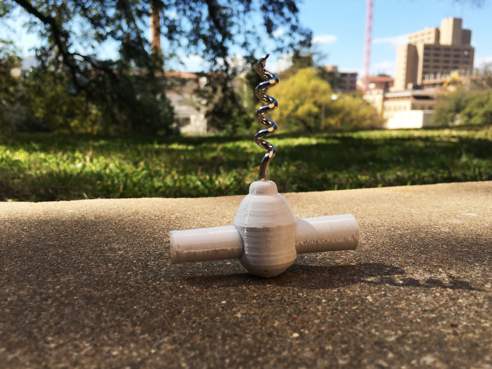
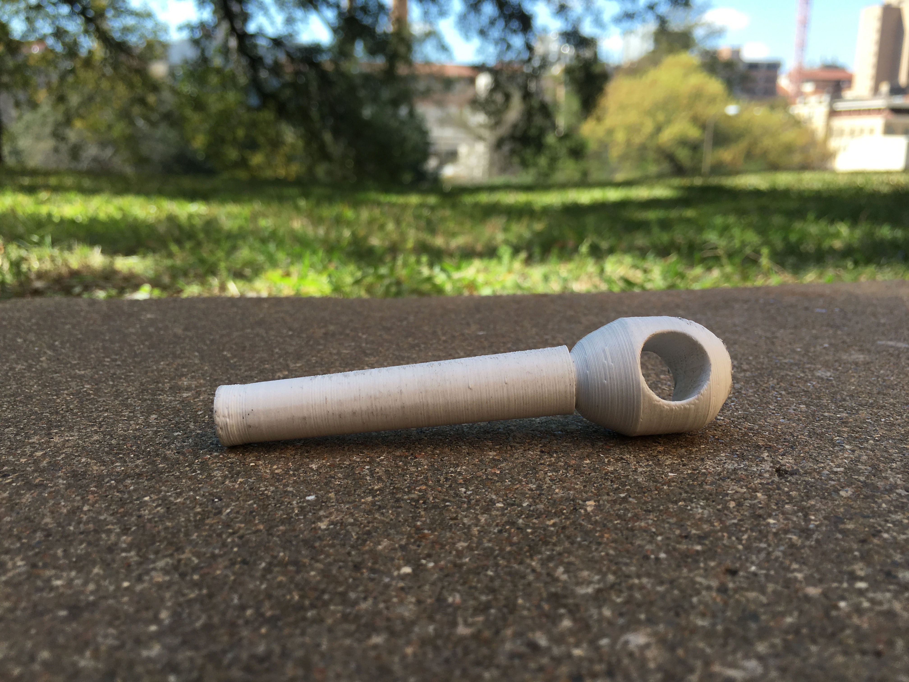

This corkscrew was created for DES 309 with Kate Caterall, which I am currently enrolled in. This was the final step in a project to redesign a kitchen object (mine was a corkscrew) I researched my object, I began to sketch new iterations of my object, I modeled my sketches using Plastacina. I finished by rendering my model with Rhino and printing in the Digital Fabrication Lab.  